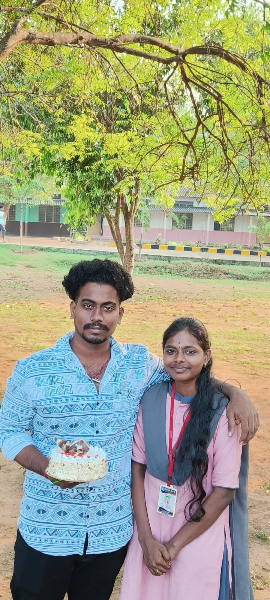
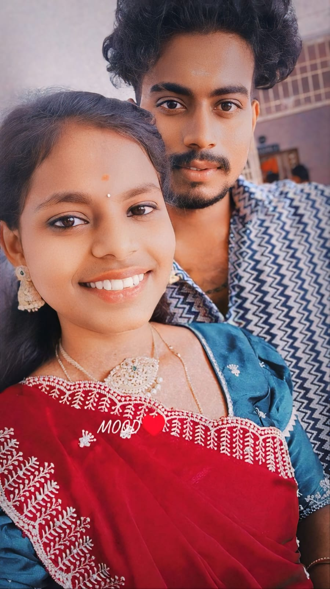
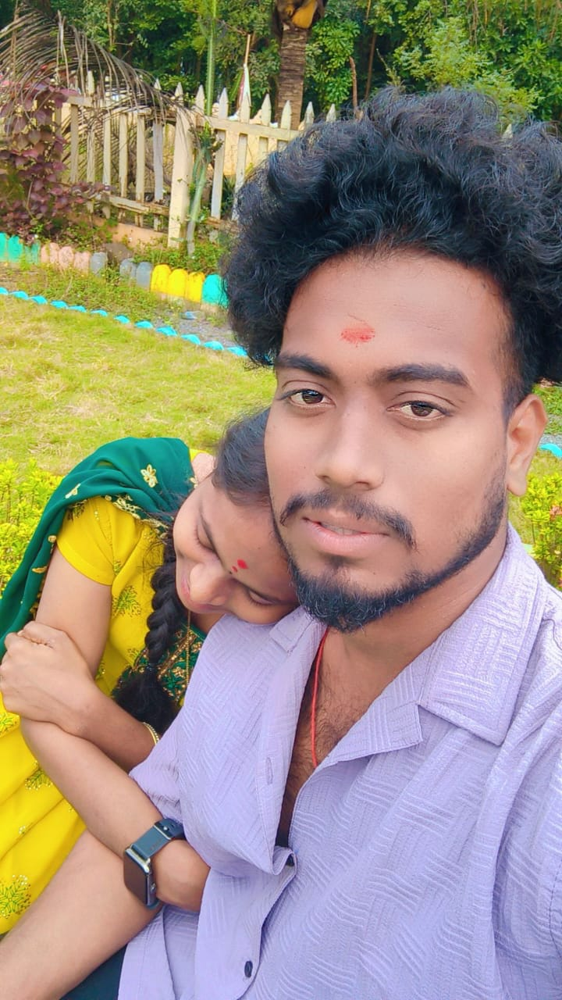
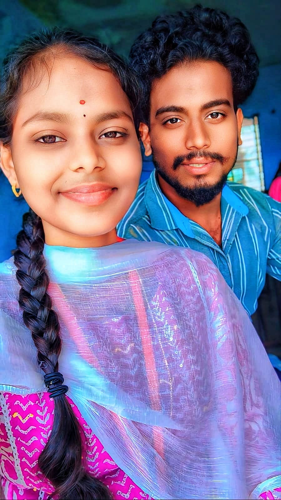
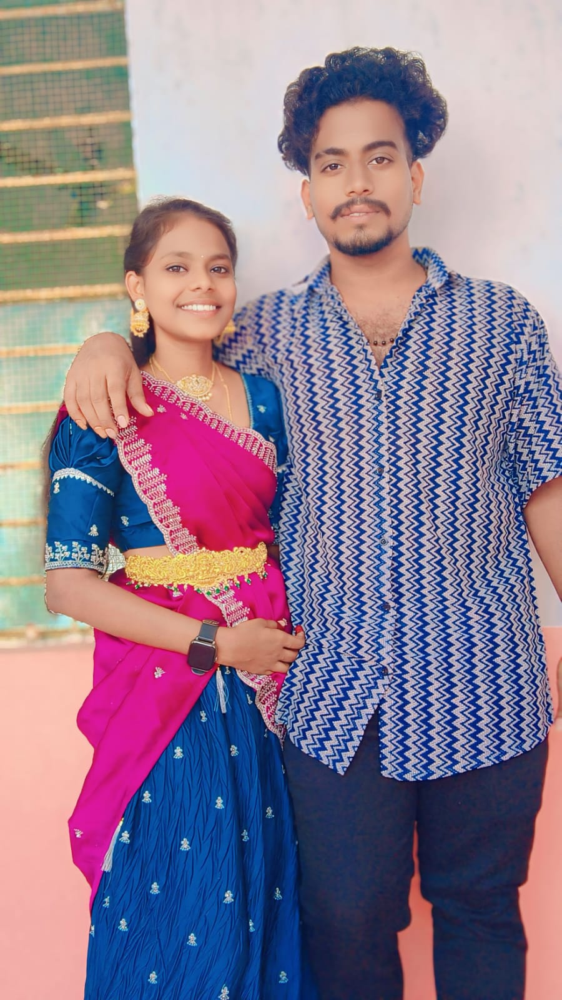

అన్నా–చెల్లెళ్ల బంధం అనేది మాటలకప్పుడూ వ్యక్తం చేయలేని అనుభూతులతో నిండి ఉంటుంది.
చిన్న చిన్న గొడవల వెనుక అపారమైన ప్రేమ ఉంటుంది. వారు ఒకరికొకరు అవసరం లేదనిపించేలా ప్రవర్తిస్తారు,
కానీ మనసులో మాత్రం ఒకరిని ఒకరు ఎప్పుడూ కోరుతుంటారు.
అన్నయ్య ఎప్పుడు అన్నట్టు నాన్నలా కనిపిస్తాడు—తన చెల్లెలి కోసం అర్థరాత్రి జాగరణ చేస్తాడు,
కానీ బయటకి మాత్రం "నువ్వు చిన్నపిల్ల" అంటాడు. చెల్లెలు ఎప్పుడూ అన్నయ్యని తిట్టినట్టే చేస్తుంది,
కానీ అతని ఫోన్ కాల్ వచ్చిందంటే ముఖం వెలిగిపోతుంది.

పుట్టినరోజులు పెద్ద విషయమేమీ కాదన్నట్టు చెప్పుకుంటారు, కానీ ఆ ఒక్క మెసేజ్
కోసం మాత్రం ఎదురు చూస్తారు. బిడ్డగా కలిసి గడిపిన రోజులను మరిచినట్టు నటిస్తారు,
కానీ ప్రతి గుప్పుమాట, ప్రతి అనుభూతిని గుండెల్లో దాచుకుంటారు. ఈ హడావుడి ప్రపంచంలో,
వారు ఒకరికి ఒకరు మౌనంగా అండగా నిలిచే దొరకని బంధం—రక్త సంబంధం కాదు కాబోలు, కానీ హృదయ సంబంధం.

అన్నయ్యకు చెల్లెలు అంటే ఒక ముద్దు బంగారం. బయట ఆమెను ఎంతగా ఆటపట్టించినా,
మనసులో మాత్రం ఆమె మీద అపారమైన ప్రేమ ఉంటుంది. చిన్నప్పటి నుంచి తన వెనకాల
ఊరుటోపిగా ఉండే ఆ చిన్న అక్కచెక్క ఇప్పుడు ఎదిగిపోతుంటే, గర్వంతో గుండె ఉప్పొంగుతుంది.
ఆమె క్షణం కష్టపడితే బాధగా ఉంటుంది, నవ్వితే తనకే ఆనందం.
తాను చెప్పకపోయినా, ప్రతి చిన్న విషయంలో ఆమెకు తోడుగా ఉండాలనిపిస్తుంది.
"నీవు బలమైనవాళ్లి" అని చెబుతాడు కానీ తన రక్షణ ఛాయల వదలడు.

చిన్ననాటి జ్ఞాపకాల్ని మరిచిపోయినట్టు నటిస్తారు, కానీ ప్రతి అర్ధరాత్రి నిన్ను నేను చెప్పుకున్న
మాటలు, పంచుకున్న రహస్యాలు ఇద్దరికీ కూడా గుర్తుంటాయి. ఈ కోలాహల భరితమైన ప్రపంచంలో,
వాళ్లు ఒకరికి ఒకరు మౌనమైన అండగా ఉంటారు — ఇది కేవలం రక్త సంబంధం కాదే, అసలే లేదు
అనుకుంటూ కూడా జీవనాంతం పాటు ఒకరికి ఒకరంటే ఎంత అవసరమో తెలిసిన బంధం.

అన్నయ్య ప్రేమ అనేది పెద్దగా చూపించడు, చెప్పడు కూడా.
కానీ ఆమె కోసం తను చేసే ప్రతి చిన్న పని ఆ ప్రేమకే నిదర్శనం.
చల్లగా కబుర్లు చెప్పినా, హద్దులు దాటి చిమ్మినట్టు మాట్లాడినా, ఆ
మాటల వెనుక ఉన్నది అపారమైన ప్రేమ. చెల్లెలు బాధపడితే, తనకు కన్నీళ్లు వస్తాయి.

నీవు నీ జీవితంలో అత్యంత కష్టాల్లో ఉన్నప్పుడు కూడా నిన్ను అర్థం
చేసుకుని ప్రేమించేవాడే ఆమె. నీ రహస్యాలు, కలలు, భయాలు — నీవు
చెప్పకపోయినా ఆమెకు తెలిసేలా ఉంటుంది. చిన్ననాటి నుండి కలిసి
పెరిగిన అనుభవం, ఇతరులు అర్థం చేసుకోలేని నవ్వులు, మిగతా వాళ్లు
తడిచేందుకు సాధ్యం కాని కన్నీళ్లు — ఇవన్నీ మీ మధ్య ప్రత్యేక బంధాన్ని ఏర్పరుస్తాయి.